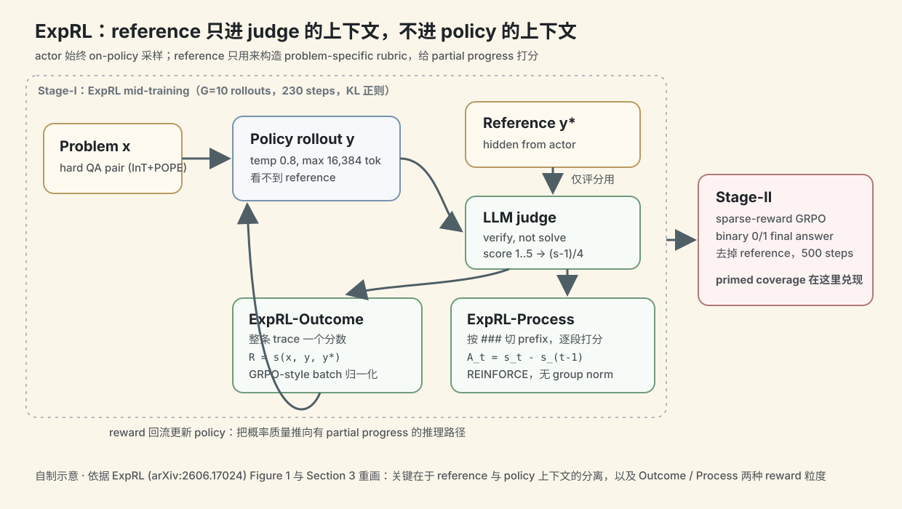
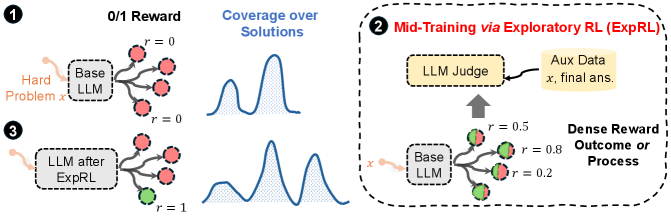
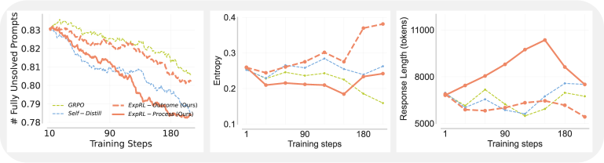
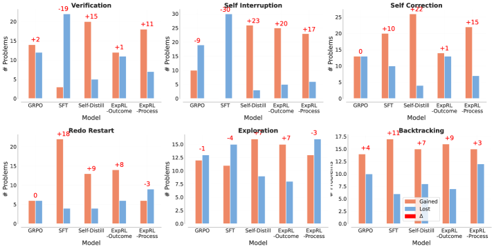
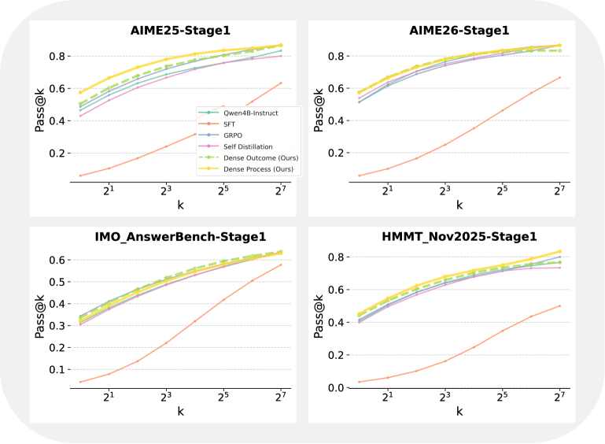

ExpRL：reference solution 不一定要拿来模仿，也可以拿来给探索打分
- Paper: ExpRL: Exploratory RL for LLM Mid-Training
- Code: violetxi/ExpRL
- Version: arXiv v1, 2026-06-15
- 类型: RL mid-training / dense reward from references / reasoning model priming
- 关键词: reference-guided reward, ExpRL-Outcome, ExpRL-Process, pass@k, GRPO, REINFORCE, self-distillation
读法：给人和 agent 的路标
这篇要抓住一个很关键的分离：reference solution 不暴露给 actor，actor 仍然只看原始题目；reference 只给 judge 用来判断 on-policy trace 有多少“朝正确解法前进”的信号。
如果只看 abstract，很容易把它误读成“有答案就做 SFT”。实际相反，作者想证明的是：对 hard reasoning，直接 imitation 可能因为 off-policy mismatch 伤到模型；更好的方式是保留 on-policy 探索，但用 reference 给 dense reward。
给 agent 之后检索，关键词是：ExpRL、reference-guided dense rewards、RL priming、pass@k as coverage、ExpRL-Outcome、ExpRL-Process、wrong reference calibration。
一句话判断
ExpRL 的核心贡献是把“人类写好的 step-by-step solution”从监督微调目标改成 奖励脚手架：模型自己采样解题过程，judge 对照参考解给 1 到 5 分的 partial progress score，再用 RL 把概率质量推向更有希望的推理路径。它的价值在于提升后续 sparse-reward RL 的初始化，而不是单独追求 mid-training 后立刻满分。
图表优先读法
| 先看 | 图/表 | 读完应该抓住什么 |
|---|---|---|
| 1 | Figure 1：ExpRL overview | reference solution 只参与 reward，不直接喂给 policy 生成 |
| 2 | Table 1 / Table 2 | ExpRL 是更好的 Stage-II RL 初始化，而不是只追 Stage-I 分数 |
| 3 | Figure 3：training dynamics | ExpRL-Process 降低 unsolvable prompts，同时没有像 sparse GRPO 那样明显掉 entropy |
| 4 | Figure 5：behavior changes | 收益来自 verification、self-correction、exploration、restart/backtrack 等行为变化 |
| 5 | Figure 10：held-out pass@k | Stage-I priming 后，低到中等采样数上的 sampling efficiency 更好 |

这张自制图把 ExpRL 最容易误读的点画出来：reference solution 不进入 policy 的上下文，只进入 judge 的评分上下文。actor 仍然从原题 on-policy 采样，judge 再用 reference 判断 trace 是否朝正确解法推进。这个分离是它区别于 SFT/self-distillation 的关键。
核心图：reference 只参与评分，不参与生成

Figure 1 讲得很清楚：
- 普通 sparse RL：hard problem 上 base model 很少采到正确轨迹，0/1 reward 几乎不给梯度。
- SFT / self-distillation：reference 或 teacher trace 变成 token target，但这些轨迹可能离 student 当前分布太远。
- ExpRL：policy 从原题采样；reference hidden from policy，只给 LLM judge 构造 problem-specific rubric；judge 输出 dense reward。
这其实是在做 exploration prior：先让模型更可能采到 productive reasoning path，再把这个模型拿去跑标准 sparse-reward RL。
方法机制
输入和目标
训练数据是 hard question-answer pairs：
x: 原始问题；y*: 人类写的 step-by-step reference solution；pi_b: base policy；- 目标：让 mid-trained policy 在后续 sparse reward RL 之前，有更高的 pass@k coverage。
作者把 pass@k 当成 coverage proxy：如果一个 policy 对某条可成功推理路径分配了非零概率，多采样几次就更可能命中。因此 pass@k 提升说明模型不是只在 pass@1 上“更自信”，而是覆盖了更多可成功路径。
ExpRL-Outcome
actor 生成完整 rollout y，judge 比较 (x, y, y*)，输出 1 到 5 分，再归一化到 0 到 1：
dense_score = (judge_score - 1) / 4
这个 reward 不是最终答案是否正确，而是 trace 是否采用了 reference 中的关键技术、结构、subgoal 或 reduction。judge 被明确要求只验证，不替模型补缺失步骤。
ExpRL-Process
Process 版本把 rollout 按 ### 等分隔符切成 prefix segment，对每个 prefix 打分。某个 segment 只有在它让 reference alignment 变好时才获得正 advantage。
这会把“中途做了正确 case split”或“验证了关键中间结论”变成局部学习信号，而不是等 final answer 才给 0/1。
两阶段训练
| 阶段 | 做什么 | 论文里的设置 |
|---|---|---|
| Stage-I | ExpRL mid-training | Qwen3-4B-Instruct-2507，G=10 rollouts per prompt，230 optimization steps |
| Stage-II | 下游 sparse-reward RL | 同一 prompt family，去掉 reference，binary final-answer reward，500 steps |
对照方法包括 SFT、普通 sparse-reward GRPO、自蒸馏，以及 ExpRL-Outcome / ExpRL-Process。
关键结果 1：作为 RL 初始化更强
Table 1 比较的是 Stage-II sparse-reward RL 之后的 pass@1，也就是“这个 priming 方法是否让后续 RL 更好”。
| Method | AIME25 | AIME26 | HMMT | IMO Answer |
|---|---|---|---|---|
| GRPO | 55.99 | 58.75 | 42.91 | 35.28 |
| ExpRL-Outcome | 59.07 | 61.74 | 49.11 | 37.85 |
| ExpRL-Process | 58.08 | 63.41 | 48.13 | 35.73 |
最明显的是 AIME26：ExpRL-Process 到 63.41，普通 GRPO 是 58.75。HMMT 上 ExpRL-Outcome 到 49.11，比 GRPO 高 6.20pp。
读这个表要注意：ExpRL 不是替代最终 sparse RL，而是让最终 sparse RL 的起点更好。
关键结果 2：Stage-I 已经提升 coverage
Table 2 看的是 Stage-I 后、Stage-II 前的 pass@1 和 pass@16：
| Method | AIME26 pass@1 | AIME26 pass@16 | HMMT pass@1 | HMMT pass@16 |
|---|---|---|---|---|
| GRPO | 51.39 | 77.55 | 41.68 | 67.58 |
| ExpRL-Outcome | 57.45 | 81.04 | 44.19 | 69.84 |
| ExpRL-Process | 57.51 | 81.10 | 45.24 | 71.48 |
这支持作者的主张：ExpRL 不只是把最终答案拟合好，而是在采样空间里增加了“可能走通的路径”。
训练动态：不是简单 mode collapse


Figure 3 的重点是：
- sparse GRPO 的 entropy 掉得最快，说明它更像在快速收缩到已知模式；
- ExpRL 和 self-distillation 保持更高 token entropy；
- ExpRL-Process 解锁 solvable prompts 更快，但也带来 response length 增长。
我的判断是，这张图比表格更能说明 ExpRL 的意图：它不是让模型“更短更准”，而是让模型在 hard problem 上保留更有用的探索空间。

Figure 10 说明 Stage-I 本身已经在 held-out answer-based benchmarks 上改善 pass@k，尤其是低到中等 k。这对“exploration”论证很关键：模型不是只靠无限采样撞答案，而是在更少尝试里更容易覆盖到能延展的解题方向。
Mixed-domain 和 judge calibration
作者还做了一个 8B mixed-domain Stage-I 实验：
- 数据规模 4,001 reference examples；
- 覆盖 math、science QA、coding；
- policy 是 Qwen3-8B，judge 是更小的 Qwen3-4B-Instruct。
Table 4 显示 ExpRL-Outcome 在多个 math / science / coding pass@1 evaluation 上都能提升 base，并且在 Math-Aggregate 和 STEM-Aggregate 上是最强 Stage-I 方法。
但 coding 是例外：LiveCodeBench 上 sparse GRPO 更强。论文的解释很合理：代码任务有执行器，functional correctness 是非常强的 sparse reward；reference path 反而不一定适合做 partial progress scaffold，因为功能等价代码可以长得完全不一样。
Table 5/6 的 calibration 也很重要：
| Judge setup | Math misplacement rate 趋势 | 说明 |
|---|---|---|
| correct reference | 4B/8B/14B 都最低 | reference 真的在帮 judge 区分好坏 |
| no reference | 明显更差 | generic judge confidence 不够 |
| wrong reference | 经常崩 | reference 必须 problem-matched |
| 0.6B judge | 不稳定 | judge 至少要有基本能力 |
| LiveCodeBench | correct/no/wrong 差别很小 | coding 更依赖功能正确性，不依赖参考路径 |
我怎么判断
可信之处
- 目标定义清晰：作者没有把 mid-training 本身包装成最终能力，而是明确说目标是 priming downstream RL。
- 有 pass@k 视角：这比只看 pass@1 更符合 exploration 的论证。
- 校准实验扎实：wrong-reference 和 no-reference 对照能证明 reward 不是普通 LLM judge confidence。
- 承认 coding 边界：在执行器强的任务上，reference-guided dense reward 不一定是最佳。
需要警惕
- reference 质量是硬依赖：没有高质量、problem-matched reference，ExpRL 就失去脚手架。
- process reward 的切分启发式很具体：
###delimiter 在不同模型和数据上未必稳。 - judge bias 会进入 policy：judge 打分不需要完美，但如果系统性偏向某种解法，policy 会学偏。
- 和 RLVR 的执行奖励关系要分域看：math proof-style reasoning 适合 reference scaffold，coding 可能更适合直接用 tests。
对我的价值
这篇对个人知识库和 agent training 都有一个很好的启发：不要急着把好答案做成 imitation target。如果目标是让模型学会探索，也许应该把好答案变成评估 rubric，而不是变成要逐 token 复刻的文本。
如果迁移到自己的 paper-reading/agent pipeline，可以想象：
reference note / expert solution
-> judge rubric
-> score agent's own attempt
-> reward partial progress, not copying style
-> keep exploration on-policy
这和 OpenThoughts-Agent 的 teacher finding 也能连起来：teacher trace 是否适合 SFT，不只取决于它对不对，还取决于它离 student 的可达行为分布有多远。
一句话收束
ExpRL 最好的点是把 reference solution 的角色从“标准答案”改成“探索脚手架”。这件事很小，但对怎么做 reasoning model 的中期训练很有想象力。